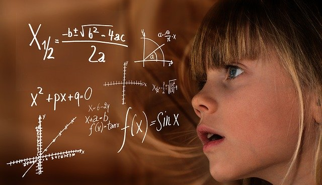

- Explorando el calor.
- Vamos a investigar la historia del termómetro mediante una lectura cooperativa.
- Investigamos el equilibrio térmico en situaciones reales y cotidianas tanto experimentales como teóricas.
- Efectos del calor.
- Analizamos los efectos del calor en sistemas cotidianos y realizamos un informe con las conclusiones obtenidas.
- ¿Cómo influye la temperatura en los Polos? Vamos a investigarlo.
- ¿Cómo se produce transporte de calor en la circulación profunda del océano? Esta va a ser nuestra investigación.
- Propagación del calor.
- Investigamos experimentalmente la propagación de calor y describimos sistemas cotidianos.
- Planificamos y diseñamos experimentos sobre la conductividad calorífica de los materiales.
- Las aplicaciones del calor.
- Experimentamos con alimentos y calculamos sus valores energéticos.
- Calculamos e investigamos nuestros gastos en agua caliente y sus gastos energéticos efectivos.
- Comprobamos nuestros conocimientos sobre el calor con la yincana del calor.
- Pruebas PISA.
- Diseñamos la casa eficiente, mediante el ítem de PISA "Casas de bajo consumo".
- Investigamos los efectos del calor en el cuerpo humanos, mediante un ítem de PISA "Correr en días de calor".
Instrucciones de USO
En este material, se presenta una propuesta didáctica relacionada con los contenidos curriculares del Bloque “La energía” de Física y Química de 2º de la ESO. No se trata de una unidad didáctica al uso o de un proyecto, sino de un conjunto de situaciones problema variadas, planteadas a modo de pequeños retos, de algunas sesiones de duración. Estos retos suponen un estímulo y un desafío para el estudiante, implicándole en la resolución de una situación significativa y relacionada con su entorno. Todo ello, por medio de actividades investigativas guiadas, dirigidas a una producción con las conclusiones de la investigación.

Estos retos ponen en contexto los contenidos curriculares y pueden servir al profesorado, bien para proporcionar ideas para el aula, bien para su aplicación directa. Es el docente el que decide, ya que pueden aplicarse en distintos momentos del tema o ir enlazados, abarcando todos los contenidos. Incluso el profesorado podría tener trabajando al alumnado en retos de distinta complejidad a la vez dentro de un mismo grupo clase.
En general, en todos ellos aparecen los siguientes elementos:
- Planteamiento de la situación problema
-
Al inicio de cada apartado se plantea una idea que puede ser investigada desde diferentes perspectivas. Se trata de una idea atractiva y cercana para el alumnado.
- Pregunta inicial para generar el reto
-
Se concreta en una pregunta esencial que refleja el interés del tema.
- Reto
-
La pregunta esencial sirve de detonante para iniciar una investigación, en este caso científica, donde los alumnos y alumnas elaboran una solución al mismo. Esta investigación requiere siempre de trabajo en equipo.
- Preguntas, actividades y recursos guía
-
Son generados por los estudiantes y representan el conocimiento necesario para desarrollar exitosamente una solución y proporcionar los recursos para el proceso de aprendizaje.
- Solución del reto
-
Los retos planteados pueden generar variedad de soluciones. De entre ellas se escoge la más trabajada y factible para que pueda ser implementada.
- Puesta en común
-
Es conveniente que las distintas soluciones planteadas por los grupos se comuniquen y se debatan mediante una puesta en común. El alcance de ésta dependerá del tiempo y recursos.
- Evaluación
-
Será continua a lo largo del proceso que dure el reto. Los resultados de la evaluación confirman el aprendizaje y apoyan la toma de decisiones a medida que se avanza en la implementación de la solución.
Los retos generalmente se trabajarán en parejas o pequeño grupo, aplicando dinámicas cooperativas, si bien puede haber alguna actividad que sea individual. Se complementan con simulaciones digitales, lecturas científicas, actividades lúdicas y cuestiones de PISA.
El alumnado deberá tener un cuaderno de investigación y un diario de aprendizaje.
En el cuaderno se registrará la investigación, usándose, por tanto, para documentar las hipótesis, experimentos y análisis o interpretación de los resultados. Este cuaderno constituye un diario en el que se recogen todos y cada uno de los experimentos realizados, con las incidencias que se hayan producido. Su característica primordial es que debe decir, de forma clara e inequívoca, qué se hizo, cómo se hizo, quién lo hizo y cuándo lo hizo.
En el Diario de aprendizaje el alumnado escribirá sobre las distintas actividades y propuestas generadas en clase, sus ideas, opiniones y experiencias planteadas en el día a día, de forma que así se pone en marcha el proceso de metacognición, respondiendo a cuestiones como: ¿Estoy consiguiendo lo que me han pedido? ¿Conseguiré terminarlo? ¿Tengo que esforzarme más? ¿Mantengo mi plan o lo cambio?,¿Qué tenía que hacer y qué he hecho? ¿Voy bien de tiempo? Me he equivocado ¿qué voy a hacer? ¿Qué he aprendido de ello? etc. Será el profesorado en cada momento (inicial, durante el proceso, al acabar) quién determine algunas de las cuestiones que el alumnado debe recoger en su diario de aprendizaje.